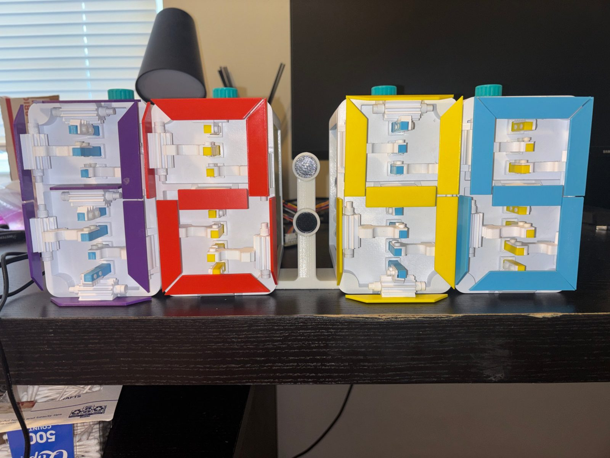
Personal Project — 2026
A four-digit clock with no screen or LEDs, where each digit is a purely mechanical display driven by one central shaft turning through 10 positions.
I wanted to build a clock with no screen or LEDs, where every digit is a purely mechanical display. Each digit is driven by the rotation of one central shaft, which turns through 10 positions, one for each number from 0 to 9. Four of these displays together make a clock, with stepper motors turning the shafts automatically.
Each digit combines three mechanisms. A spur gear train carries the stepper motor's rotation to the central shaft. Stacked up that shaft are inverse cam pairs, which turn the shaft's rotation into linear motion of each segment's rack. Each rack drives a pinion, and the pinion flips that segment's panel into view or out of view. As the shaft moves through its 10 positions, the cams push each rack to the right place, so the panels together form every digit from 0 to 9. In total the clock has about 39 unique parts, and every one of them is designed to be 3D printed.
I chose stepper motors over servos because of how the mechanism moves. A standard servo only sweeps about 180°, so it can't turn the shaft through repeated full rotations. A continuous rotation servo can spin freely, but it has no position control, so I'd be guessing how far it turned. A stepper moves in exact increments and can keep turning in one direction indefinitely, which is what a shaft that advances one digit at a time needs. Mechanical detents also hold each position, so the motor only has to move the mechanism and doesn't have to hold it.
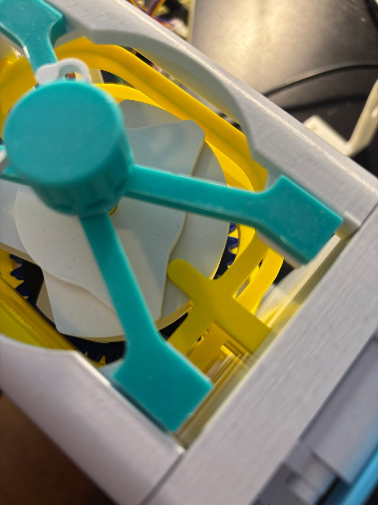
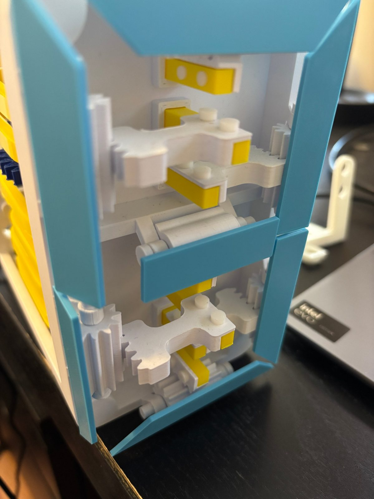
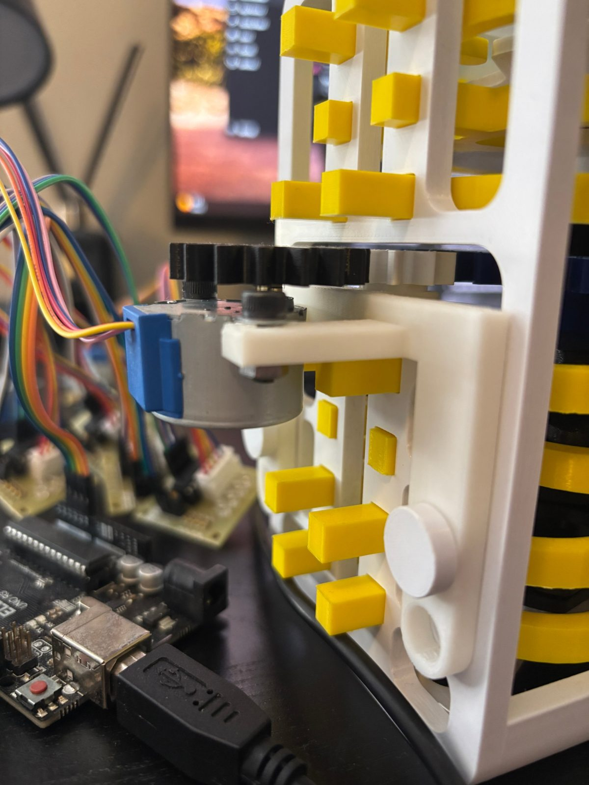
The CAD was the hardest part of the project. I had to work out how each mechanism functions and how all of them fit together, while keeping each digit compact enough to stack seven inverse cam pairs and rack and pinion sets on one shaft. I built the assembly in SolidWorks with mates for each moving joint, so I could check the motion before printing anything.
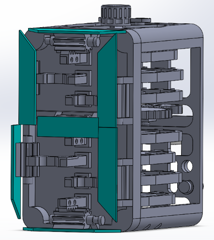
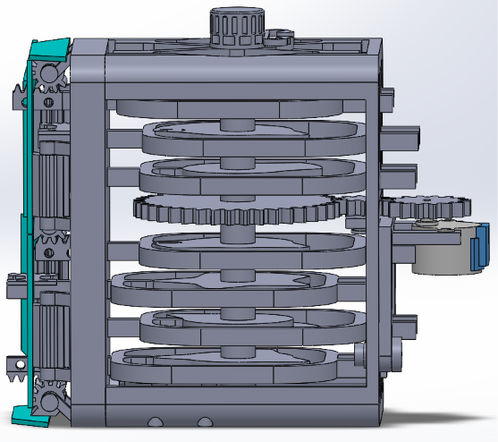
Before printing the full clock, I printed test pieces to find the right tolerances, since everything is 3D printed and the clearances decide whether the clock works at all. Circular press fits worked with 0.2 mm of total clearance. Spinning shafts got 0.3 mm total. For the prismatic joints, a 7 mm by 7 mm part slides in a hole that is 7.6 mm wide and 7.4 mm tall.
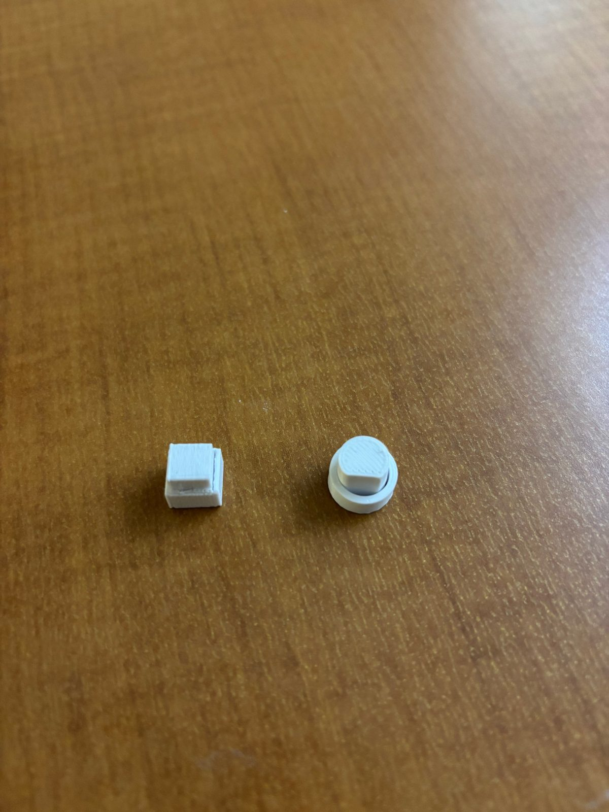
For assembly, I printed all the parts and laid them out for one module before putting anything together. I assembled each digit and turned the shaft by hand to check that it clicked through all 10 positions.
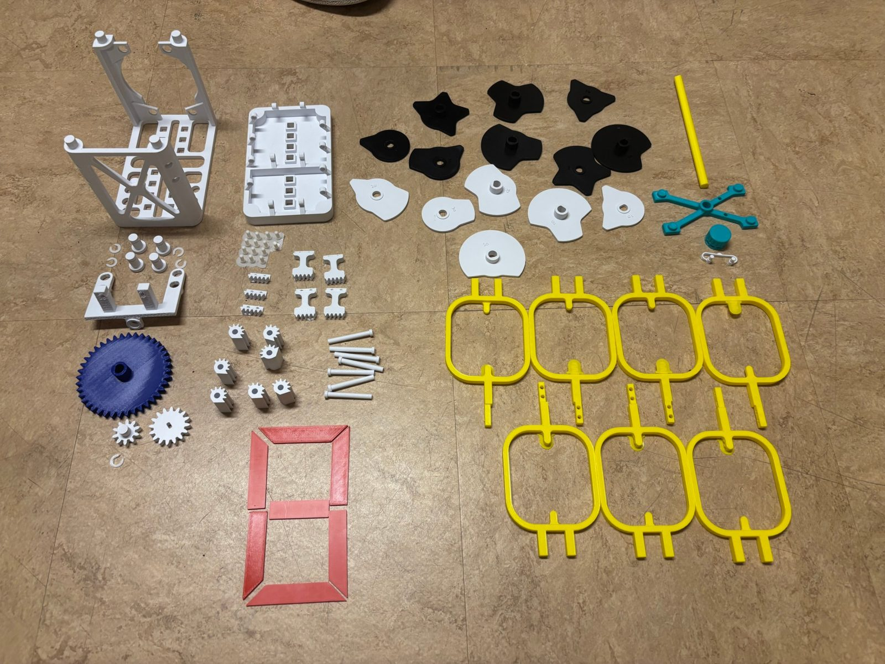
The electronics are an Arduino Uno controlling four 28BYJ-48 stepper motors through ULN2003 driver boards. The Uno browned out when I tried to power all the motors from it, so I added a separate 5V supply on a breadboard to distribute power to the drivers, with a shared ground back to the Uno.
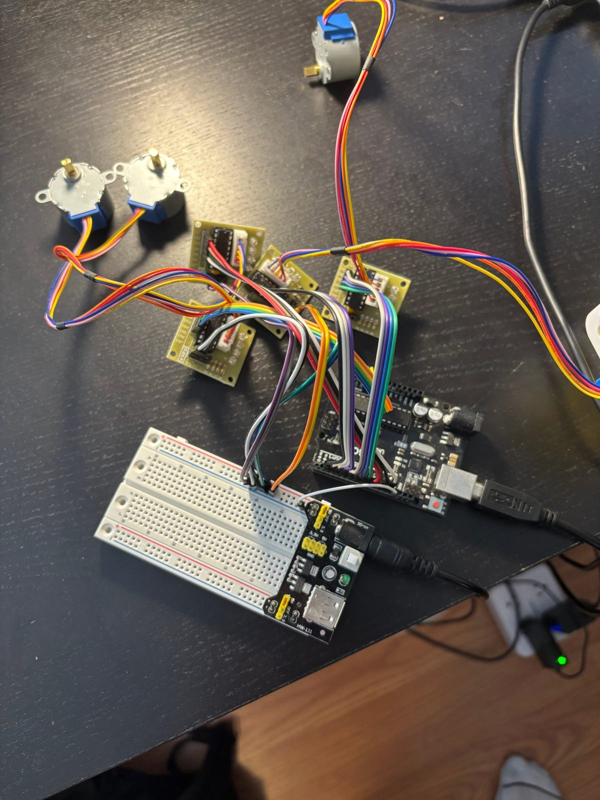
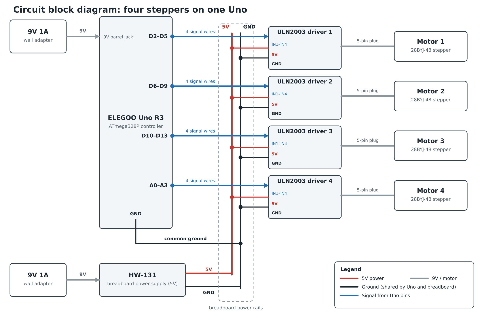
I wrote the code in stages. First, I wrote a quick program that turns the motor continuously, to make sure I could get a motor to turn at all.
Next, I wrote a serial monitor test where I type a digit and the motor moves to it. This confirmed I could get the digits to change, and let me calibrate how many steps one digit takes.
Then I wrote the full clock program. At startup I turn all four digits to 0 by hand and type the current time into the serial monitor as four digits. Once the fourth digit arrives, it moves every display to that time and starts counting. Each minute it works out the four digits for the new time and advances whichever displays changed. The motors only turn one way, so a digit that wraps from 9 back to 0 turns forward through the rest of the cycle. The minute count runs on its own timer instead of waiting for the motors to stop, since each move takes a few seconds, so the clock doesn't drift while the motors are moving.
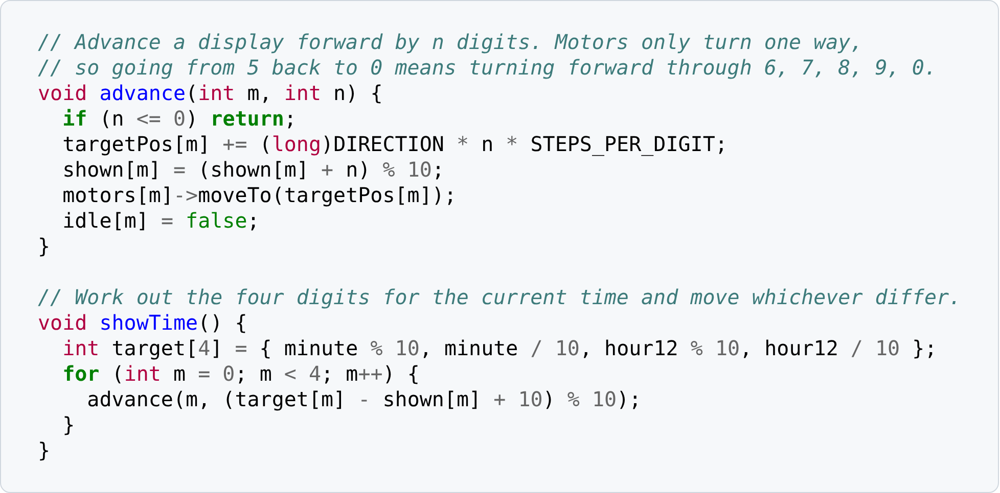
The biggest challenge was tolerance stack-up. I had set the clearances for each part but hadn't accounted for them adding up as the cam pairs stacked up the shaft. The first four pairs aligned fine, but past that point the accumulated error was too much and the upper cam pairs stopped working. To fix it, I made the fifth cam from the bottom slightly shorter, which reset the stack for the three pairs above it. That meant reprinting only four parts in total, one for each digit.
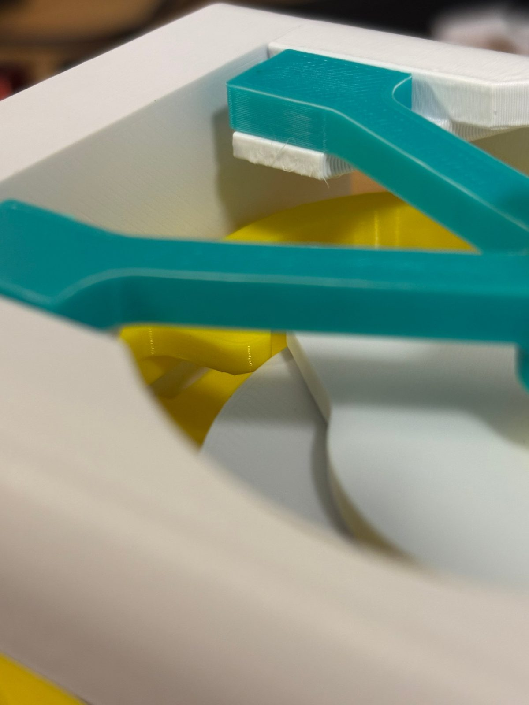
A smaller problem came from the motor mount. The gear on the motor hit the heads of the mounting bolts, so I raised it 1.5 to 2 mm on the shaft. It stayed firmly seated with no wobble, but raising it meant the idler gear had to move up by the same amount to stay in mesh. I fixed that by redesigning the motor mounts to hold the idler higher.
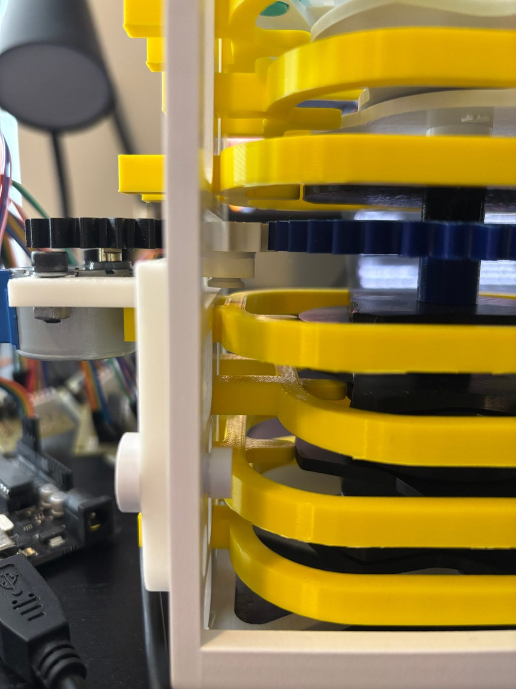
I built a working mechanical clock whose digits advance on their own. It runs a little noisy, but it's a great display to watch. The deliverables are the full CAD assembly, the physical prototype, and the firmware that runs it.